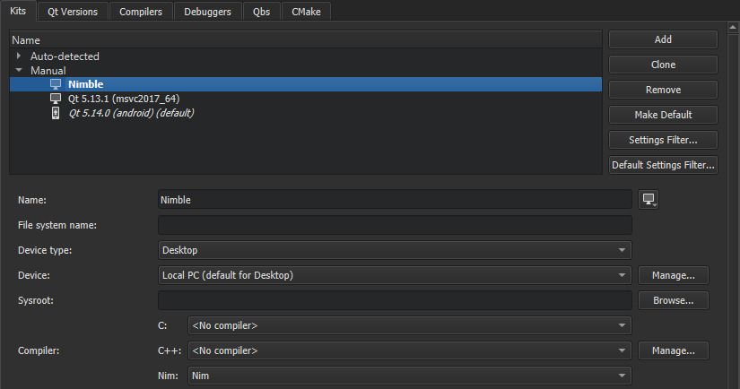

Add Nim compilers
The Nimble package manager uses the Nim compiler to generate Nim application executables for the desktop platforms.
To build an application using the Nim compiler:
- Select Preferences > Kits > Compilers > Add > Nim to specify the path to the Nim compiler.
- Select Apply to add the compiler.
- Select Kits > Add to add a kit for building applications with Nimble:

- In the Name field, specify a name for the kit.
- In the Compiler group, Nim field, select the Nim compiler you added above.
- Select Apply to add the kit.
See also Add compilers, Compilers, Create Nimble projects, Nim, and Nimble.